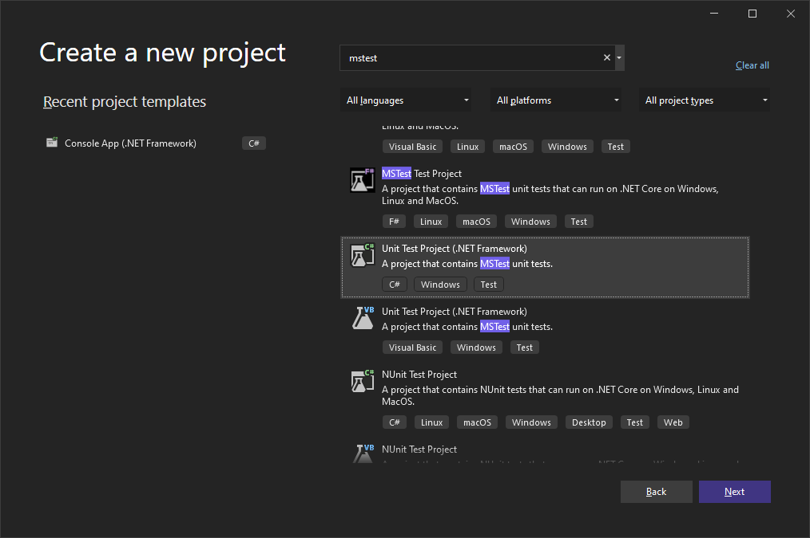
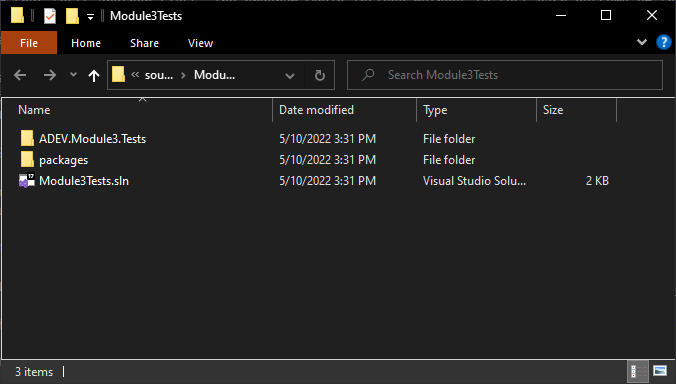
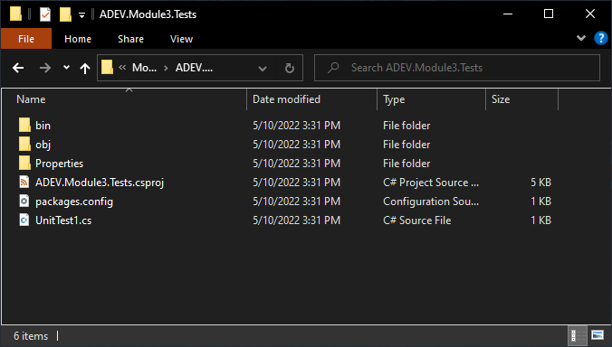
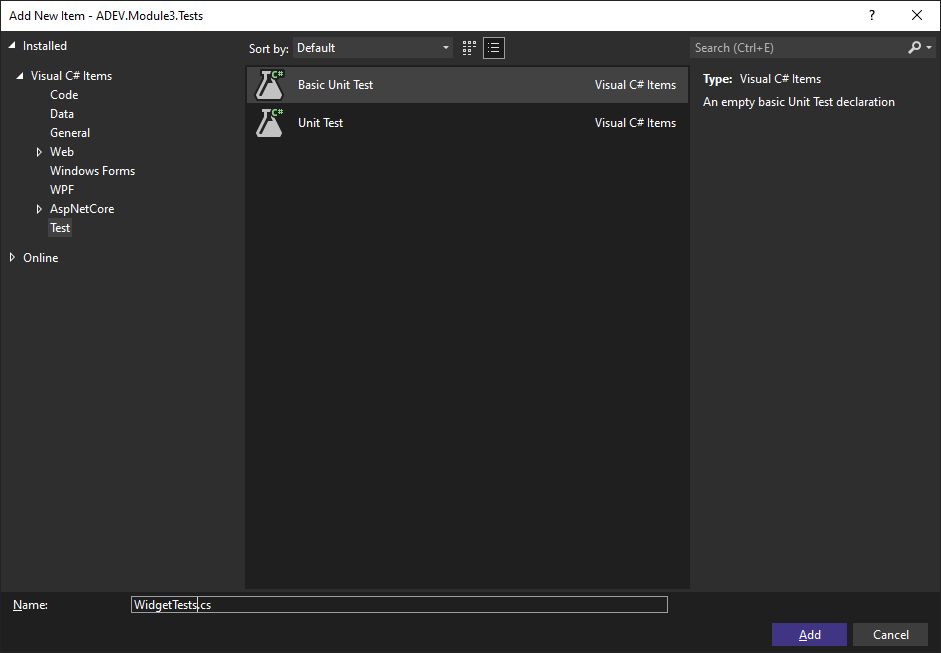

MSTest
Table of Contents
- What is MSTest?
- Creating an MSTest Project
- Solution File Structure
- Unit Test Class Standards
- Add Unit Test Classes
The quality of your code is directly effected by how well you’ve tested it. The process of testing software is often referred to as Unit Testing. It’s called unit testing because the software being tested is broken down into testable behaviors known as units. Typically, the smallest unit of testable code is a method. In C#, this would also include property accessors.
The goal of unit testing is to execute each unit to verify its behavior results in the expected way based on the requirement of the unit.
Prior to this lesson, you preformed unit testing. You would have done this in two ways:
- Execute a program many times to determine all possible outcomes are met.
- Write a program that tests another class. The program would include methods to test each outcome of the methods within the class you are testing.
These techniques are acceptable when you are beginning your developer journey. But they do have drawbacks:
- Testing a program typically requires human interaction.
- Results are verified by the tester comparing values. This can often lead to oversights.
- Not able to test methods independently in many cases due to inaccessible fields.
What is MSTest?
MSTest is a Unit Testing Framework (UTF). It helps in writing effective unit tests. The UTF includes software tools that support writing and running of tests, that includes a foundation to build tests and functionality to execute tests and report the results.
Creating an MSTest Project
Creating a Class Library project follows the same steps as a Console Application, except that you will choose a different project template.
When you get to the Create a new project window, the project type you want to choose is called “Unit Test Project (.NET Framework)”. You can use the search to filter the list.

Solution File Structure
At this point you may have more than one Visual Studio solution stored in this location. Read the directories careful to determine the one you are looking for.
Solution Directory

The solution directory contains:
- Project Directory - You will see one directory for each project in the solution. New solutions will only contain one project and thus will have one project directory.
- packages - This directory can be ignored. We won’t be using it in this course.
- Solution File (.sln) - A file that ends with the file extension .sln. The .sln file contains information the Visual Studio environment needs to find and load the solution’s associated projects and resources.
Project Directory

The project directory contains:
- bin Directory - Where the resulting files of a successful project build are stored.
- obj Directory - This directory can be ignored. We won’t be using it in this course.
- Properties Directory - This is another directory that can be ignored.
- MS Build File (.csproj) File - The MSBuild file for the Visual Studio project.
- packages.config - An XML file that can be used to store settings for the test project.
- UnitTest1.cs - This file contains a class called
UnitTest1and is created by default because of the project template that was chosen when creating the project.
UnitTest1 is not an appropriate name for a class. You should rename this file and the class identifier within it.
Unit Test Class Standards
Unit Test class identifiers follow the same standards as any other class and are named in the following format:
ClassYouAreTestingTests
The identifier will begin with the name of the class you are testing followed by the word “Tests”. For example, if you are testing a class called “Student”, the unit test class would be called “StudentTests”.
Add Unit Test Classes
To add additional unit test classes to your unit test project, add an item to your project as you’ve done for other projects. In the Add New Item dialog window, select Test from the template categories on the left hand side of the window. Then choose the Basic Unit Test template. Give the source code file a name based on the unit test class standards above.

The Basic Unit Test template will use the file name as the class identifier.